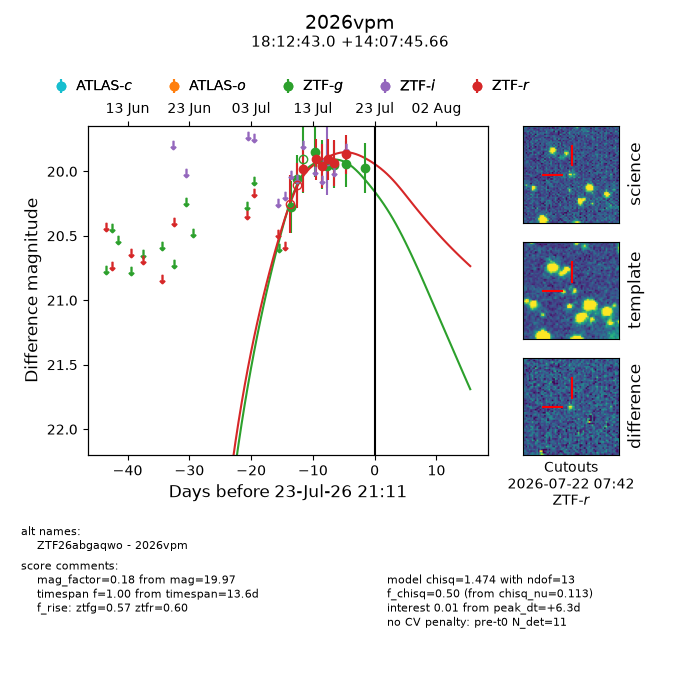
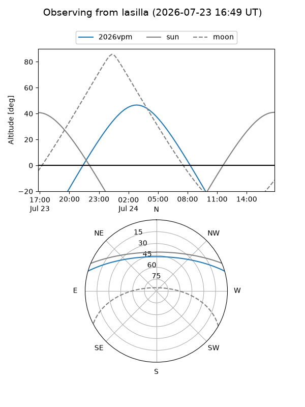
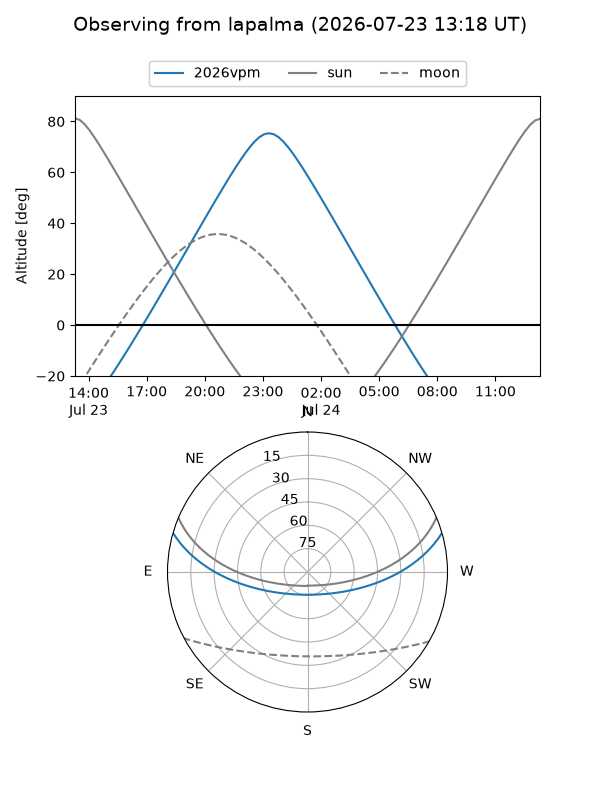
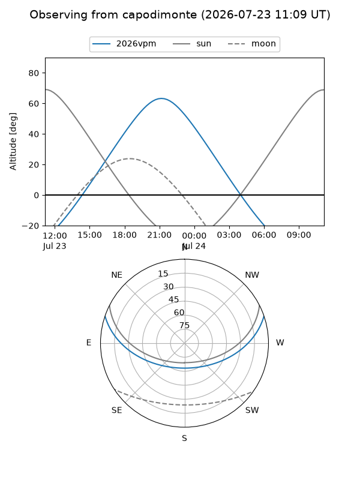
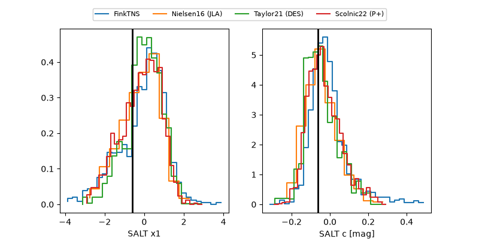

2026vpm
Target 2026vpm at 2026-07-23 21:14
Aliases and brokers:
FINK-ZTF: ztf.fink-portal.org/ZTF26abgaqwo
Lasair-ZTF: lasair-ztf.lsst.ac.uk/objects/ZTF26abgaqwo
ALeRCE-ZTF: alerce.online/object/ZTF26abgaqwo
YSE-PZ: ziggy.ucolick.org/yse/transient_detail/2026vpm
TNS name: wis-tns.org/object/2026vpm
Direct TNS query: direct search
alt names
ZTF26abgaqwo (ztf,fink_ztf)
2026vpm (tns,yse)
Coordinates:
equatorial (ra, dec) = 273.1792,+14.12935
equatorial (HMS+DMS) = 18:12:43.00,+14:07:45.66
galactic (l, b) = (41.4341,+14.85866)
Flags:
peak dt: +6.3
Photometry:
last ztfg=19.97, ztfr=19.87
8 ztfg, 6 ztfr detections
Lightcurve

Visibility



Additional plots
